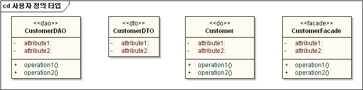

|
| 소프트웨어 아키텍처에 따라 분석클래스로부터 실제 개발에 필요한 설계클래스를 도출하고 각 클래스의 속성, 오퍼레이션과 이들간의 관계를 파악한다. |
Domains: 설계모델
Extends and Replaces: 클래스다이어그램 |
|
Relationships
| Roles | Responsible:
| Modified By:
|
| Tasks | Input To:
| Output From:
|
| Process Usage |
|
Description
| Main Description |
[클래스다이어그램]
작성항목
-
클래스
(Class)
-
클래스
설계 태스크에서의 설계클래스는 소프트웨어 아키텍처에 따라 분석클래스를 설계클래스로 구체화한 것이다. 소프트웨어 아키텍처에서 정의한 디자인 패턴에 따라 다양한 유형의 클래스가 생성될 수 있고,
이는 클래스의 stereotype을 지정하여 표현하도록 한다.
-
소프트웨어
아키텍처에 따른 사용자 정의 타입

위와 같이 클래스에 UML stereotype을 적용하여 다양한 디자인 패턴을 표현할 수 있다. 이를 통해 해당 클래스의 역할과 책임을 보다 정확히 명시하게 된다.
-
오퍼레이션
(Operation)
설계클래스의 오퍼레이션은 분석클래스의 오퍼레이션을 기반으로 실제 구현 기술을 고려하여 도출한다. 또한 오퍼레이션의 모든 매개변수와 리턴타입을 도출하여 정의한다. 즉, 모든 설계
오퍼레이션은 분석 오퍼레이션이 가지고 있는 서비스의 의미를 실제 구현 기술 관점으로 구체화한다.
-
속성
(Attribute)
설계클래스의 속성은 분석클래스의 속성을 기반으로 실제 구현 기술 관점으로 구체화하고, 속성의 타입을 정의한다.
-
관계
(Relationship)
-
-
설계클래스들의
관계는 소프트웨어 아키텍처와 구현 기술 관점에 따라 분석클래스들의 관계를 재정의한다. 이 때 소프트웨어 아키텍처 레이어에 따라 각기 역할이 다른 설계클래스들 간의 호출관계는 일반적으로
Dependency로 표현한다. 왜냐하면, 서로 다른 레이어에 있는 클래스들 간에는 지속적으로 상대 클래스를 참조하지 않고 특정 서비스의 필요에 의해 일시적으로(temporary) 상대
클래스를 참조하기 때문이다.
|
Illustrations
Key Considerations
작성시
고려사항
-
입력물로
사용되는 시퀀스다이어그램(설계), ERD(물리)의 경우는 병행작업 되면서 완성된다.
-
클래스다이어그램(설계)의
작성단위는 기본적으로 유스케이스 단위로 작성하여 분석모델이 정확하게 설계되었는지 확인할 수 있도록 한다. 그러나 유스케이스의 구성이 단순한 경우가 대부분이라면 특정 레벨의 설계패키지 단위로도 작성할 수
있다.
-
복수
구현(Implementation)을 가진 클래스를 직접 참조하는 경우 : 두 클래스들 사이의 직접적인 참조 관계는 하나의 클래스가 다른 클래스를 멤버 변수, 지역 변수, 오퍼레이션 매개변수 혹은 오퍼레이션
리턴으로 정의할 때 발생한다. 이러한 직접적인 참조 관계는 그 자체로 문제가 되지 않지만 참조되는 클래스가 다수의 상이한 구현을 가질 수 있을 때 설계의 품질을 저하시킬 수 있다. 예를 들어
PremiumCalculator 클래스는 고객 타입 혹은 계절에 따라서 다른 알고리즘을 사용할 수 있다. 많은 클래스들이 PremiumCalculator를 직접적으로 참조하고 있을 때 만약 우리가
PremiumCalculator를 CustomerTypePremiumCalculator 클래스나 SeasonalPremiumCalculator 클래스로 바꾸고자 한다면 참조하고 있는 모든 클래스들이
수정되어야 한다. 이러한 경우 참조되는 클래스의 책임은 동일하게 유지 되지만 이의 구현(일반, 계절 혹은 고객 유형에 따른 할인)은 변경될 수 있다. 따라서 참조되는 클래스는 인터페이스, 예를 들면
IPremiumCalculator 뒤로 숨겨서 은닉화(Encapsulate) 하는 것이 바람직하다. 이렇게 하는 것의 장점은 PremiumCalculator를 참조하는 모든 클라이언트 클래스들은
PremiumCalculator 구현 클래스를 직접적으로 참조하지 않기 때문에 IPremiumCalculator 인터페이스를 구현하는 새로운 클래스로 대체함으로써 어플리케이션의 행위를 매우 쉽게 변경할 수
있게 된다
-
다른
클래스의 인스턴스를 직접 생성하는 경우 : 하나의 클래스가 new 키워드를 이용하여 다른 클래스를 직접적으로 생성시킬 때, 이 클래스는 생성되는 클래스의 직접 참조자를 갖게 된다. 만약 생성하고자 하는
클래스를 다른 방식으로 구현하기를 원한다면, 이 클래스를 참조하는 모든 클라이언트 클래스를 수정하여야 한다. 개선된 설계 방법은 필요한 클래스의 생성 작업을 외부로 빼내는 것이다. 클래스들은 우선 생성이 된
상태로 참조하는 클래스들의 생성자에 전달될 수 있거나, 참조하는 클래스들이 팩토리 클래스를 호출하여 해당 인스턴스를 얻을 수 있다. 이러한 방식은 어떤 구현 클래스를 생성시킬 것인가에 대한 의사 결정을 다른
누군가 대신 하게 되는 것이다. 결과적으로 참조하는 클래스들이 변경사항에 좀더 유연해 질 수 있다. 이것은 GoF 의 Factory 패턴이다.
-
복잡한
데이터구조를 생성하는 경우 : 하나의 클래스가 데이터베이스 또는 다른 클래스로부터 데이터를 가져오고 그 데이터로부터 트리 구조나 클래스 계층 구조 형태로 복잡한 데이터 구조를 생성시킬 필요가 있을 때가
있다. 사용자 인터페이스나 SQL 쿼리문 들이 이러한 복잡한 구조의 많이 알려진 예이다. 이 방식의 문제점은 이런 구조를 구축하는데 필요한 정보를 획득하는 책임을 가진 클래스와 클라이언트 클래스 모두가 실제
데이터 구조에 의존한다는데 있다. 만약 데이터 구조가 변경된다면(자주 변경되곤 한다) 많은 클래스들이 또한 변경되어야 한다. 좀더 나은 해결방법은 복잡한 구조를 구성하는 것으로부터 필요한 정보를 모으는 것을
분리시키는 것이다. 한 클래스는 데이터베이스나 다른 클래스들로부터 구조를 구성하는데 필요한 정보를 모으고, 이 정보들을 실제 구성하는 즉 실제 구조를 만들어내는데 책임을 가진 클래스에게 전달하는 것이다.
이러한 방법으로 다른 클래스들을 변경에 좀더 유연하게 만들 수 있도록 데이터 구조의 생성을 은닉할 수 있다. 이것은 GoF의 Builder 디자인 패턴이다.
-
강한
결합 : 가끔 클래스들이 많은 양의 정보를 서로 교환할 필요가 발생하는데 이것은 결과적으로 이러한 클래스들 사이의 많은 의존관계를 가져오게 된다. 이렇게 강도 높은 커플링(coupling)은 피해야 하는데
왜냐하면 해당 클래스들의 재사용성을 떨어트리고 안정적이지 못한 구조를 – 하나의 클래스가 변하면 다른 모든 클래스들도 변경해야 한다 – 만들기 때문이다. 이 문제에 대한 해결책은 별도로 분리된
Mediator 클래스를 만들고 이 클래스로 하여금 강하게 결합된 클래스들 사이의 커뮤니케이션을 관리하도록 하는 것이다. 어떤 클래스든 다른 클래스들에게 어떤 이벤트를 통보하고자 하면 간단히 Mediator
클래스를 호출하여 이 클래스가 해당 이벤트에 관련 있는 클래스들에게 통보하도록 한다. 어떤 클래스든 다른 클래스의 상태를 조회하기를 원하면 Mediator 클래스에게 요청을 하고 이 클래스가 관련된
클래스로부터 관련 정보를 조회하여 전달하게 된다. 이러한 방법으로 강한 결합 문제는 각 클래스와 Mediator 클래스 사이의 의존관계로 바꿀 수 있으며 결과적으로 모든 클래스들을 좀 더 재사용 가능하게
그리고 안정적으로 만들 수 있게 된다. 이것은 GoF 의 Mediator 디자인 패턴이다.
|
Tailoring
| Impact of not having |
미작성시
영향
-
확장성(Extensibility),
보수성(Maintainability), 재사용성(Reusability) 등을 고려하여 시스템을 구성하기 어렵다.
-
설계단계
작성원칙과 설계전략이 준수되었는 지 파악하기 어렵다.
-
컴포넌트
또는 프레임워크 등을 활용하여 재사용할 부분을 찾기 어렵다.
-
디자인
패턴이 일관성있게 적용되기 어렵다.
-
시스템의
구현을 위한 클래스가 누락될 수 있다.
-
클래스의
오퍼레이션 및 속성이 상세화되지 않아 클래스를 구현하기 어렵다.
-
클래스의
간의 상관관계를 파악하기 어렵다.
-
중복되는
클래스 및 오퍼레이션이 도출될 수 있다.
|
| Reasons for not needing |
작성이
불필요한 경우
-
클래스다이어그램(설계)는 반드시 작성하도록 한다.
|
| Representation Options |
제출시
고려사항
-
설계단계
완료 시 고객에게 제출하고 승인을 받도록 한다.
|
|